용접기능장 (2011-04-17 기출문제)
1과목: 임의구분
1. 인버터 방식의 아크 용접기의 특징이 아닌 것은?
- 용접기가 소형 경량이다.
- 고속 정밀 제어가 가능하다.
- 아크 스타트(arc start)율이 높다.
- 용접기의 보수 유지가 간단하다.
(정답률: 70%)

2. 가스절단용 산소 중의 불순물이 증가될 때 나타나는 현상으로 올바른 것은?
- 절단면이 깨끗해진다.
- 절단속도가 빨라진다.
- 산소의 소비량이 많아진다.
- 슬래그의 이탈성이 좋아진다.
(정답률: 91%)
3. 피복 아크 용접봉의 피복제에 대하여 설명한 것 중 맞지 않는 것은?
- 저수소계를 제외한 다른 피복 아크 용접봉의 피복제는 아크발생 시 탄산(CO2)가스와 수증기(H2O)가 가장 많이 발생한다.
- 아크 안정제는 아크열에 의하여 이온화가 되어 아크전압을 강화시키고 이에 의하여 아크를 안정시킨다.
- 가스 발생제는 중성 또는 환원성가스를 발생하여 용접부를 대기로부터 차단하여 융융금속의 산환 및 질화를 방지하는 작용을 한다.
- 슬래그 생성제는 용융점이 낮은 슬래그를 만들어 용융금속의 표면을 덮어서 산화나 질화를 방지하고 용착 금속의 냉각속도를 느리게 한다.
(정답률: 84%)
4. 금속재료를 접합하는 방법 중 용접은 무슨 접합법인가?
- 기계적 접합법
- 야금적 접합법
- 전자적 접합법
- 자기적 접합법
(정답률: 87%)
5. 절단부에 철분 등을 압축공기로 팁을 통해 분출 시키며 예열불꽃 중에서 연소반응에 따른 고온을 이용한 절단법으로 맞는 것은?
- 산소창 절단
- 탄소 아크 절단
- 분말 절단
- 미그 절단
(정답률: 69%)
6. 가스용접 시 가변압식 토치에 사용하는 팁 번호가 250번인 것을 중성불꽃으로 용접한다면 아세틸렌가스의 소비량은 매 시간당 몇 L 가 소비되는가?
- 100
- 150
- 200
- 250
(정답률: 80%)
7. 아세틸렌가스의 자연발화 온도는 몇 도인가?
- 306~308℃
- 355~358℃
- 406~408℃
- 455~458℃
(정답률: 89%)
8. 자기불림 또는 아크쏠림의 방지책이 아닌 것은?
- 큰 가접부를 향하여 용접할 것
- 긴 용접부는 후퇴법을 사용할 것
- 용접봉 끝은 아크쏠림 쪽으로 기울여 용접할 것
- 접지점 2개를 연결하여 용접할 것
(정답률: 85%)
9. 교류 아크 용접기(AC arc weldin machine)에 관한 설명 중 옳은 것은?
- 교류 아크 용접기는 극성 변화가 가능하고 전격의 위험이 적다.
- 교류 아크 용접기는 가동철심형, 탭전환형, 엔진구동형, 가포화리엑터형 등으로 분류된다.
- AW-300은 교류 아크용접기의 정격 입력 전류가 300(A)흐를 수 있는 전류 용량의 값을 표시하고 있따.
- 교류 아크용접기의 부속장치에는 고주파 발생장치, 전격방지 장치, 원격제어 장치 등이 있다.
(정답률: 58%)
10. 가스용접기에서 전진법에 비교한 후진법에 대한 설명으로 틀린 것은?
- 판 두께가 두꺼운 후판에 적합하다.
- 용접속도가 빠르다.
- 용접변형이 작다.
- 열 이용률이 나쁘다.
(정답률: 70%)
11. 아크에어 가우징에 대한 설명으로 틀린 것은?
- 그라인딩, 치핑, 가스 가우징 보다 작업능률이 2~3배 높다.
- 가우징 토치는 일반 피복 아크 용접봉 토치와 비슷하나 부수적으로 압축공기를 보내는 공기통로와 분출구가 마련되어 있다.
- 용융금속을 쉽게 불어내므로 가우징 속도가 느려 모재의 가열범위가 넓다.
- 활용범위가 넓어 비철금속(스테인리스강, 알루미늄, 동합금 등)에도 적용이 된다.
(정답률: 85%)
12. 용접 수축량에 미치는 용접시공 조건의 영향으로 맞는 것은?
- 용접 속도가 빠를수록 각 변형이 커진다.
- 용접봉 직경이 큰 것이 수축이 크다.
- 용접 밑면 루트 간격이 클수록 수축이 크다.
- 용접 홈의 형상에서 V형 홈이 X형 홈보다 수축이 적다.
(정답률: 60%)
13. 용접기의 자동전격 방지 장치에서 아크를 발생하지 않을 때는 보조변압기에 의해 용접기의 2차 무부하 전압을 몇 V이하로 유지하는 것이 가장 적합한가?
- 30
- 40
- 45
- 50
(정답률: 82%)
14. 피복 아크 용접봉 중 염기성이면서 내 균열성이 가장 우수한 것은?
- 저수소계
- 라임티타니아계
- 일루미나이트계
- 고셀롤로오스계
(정답률: 92%)
15. 다음은 여러 가지 절단법에 대하여 설명한 것이다. 틀린 것은?
- 산소창 절단법의 용도는 스테인리스강이나 구리, 알루미늄 및 그 합금을 절단하는데 주로 사용한다.
- 아크에어 가우징은 탄소아크 절단에 압축공기를 같이 사용하는 방법으로 용접부의 홈파기, 결함부 제거 등에 사용된다.
- 수중절단에 사용되는 연료 가스로는 수소, 아세틸렌, LPG 등이 쓰인다.
- 레이저 절단은 다른 절단법에 비해 에너지 밀도가 높고 정밀절단이 가능하다.
(정답률: 63%)
16. 일렉트로 슬래그 용접의 장점이 아닌 것은?
- 후판을 단일층으로 한번에 용접할 수 있다.
- 최소한의 변형과 최단 시간의 용접법이다.
- 아크가 눈에 보이지 않고 아크 불꽃이 없다.
- 높은 입열로 인하여 기계적 성질이 향상된다.
(정답률: 58%)
17. TIG 용접에 대한 설명으로 가장 거리가 먼 것은?
- TIG 용접은 알루미늄 합금과 스테인리스강을 비롯한 대부분의 금속을 접합할 수 있다.
- TIG 용접은 용제(flux)를 사용하지 않으므로 슬래그 제거가 불필요하다.
- TIG 용접은 교류전원 만을 용접에 사용하고 있다.
- TIG 용접에 사용하는 아르곤 가스는 용착금속의 산화, 질화를 방지한다.
(정답률: 90%)
18. MIG 용접의 특징 설명으로 틀린 것은?
- 수동 피복아크 용접에 비하여 능률적이다.
- 각종 금속의 용접에 다양하게 적용할 수 있다.
- 박판(3mm 이하)용접에서는 적용이 곤란하다.
- CO2용접에 비해 스패터의 양이 많다.
(정답률: 79%)
19. 저항 점용접(spot welding)에서 용접을 좌우하는 중요인자가 아닌 것은?
- 용접전류
- 통전시간
- 용접전압
- 전극 가압력
(정답률: 79%)
20. 화재의 분류 및 구성, 안전에 대한 설명 중 틀린 것은?
- 전기 화재에는 포말소화기를 사용한다.
- 인화성 액채의 반응 또는 취급은 폭발 한계범위 이외의 농도로 한다.
- 화재의 구성 요소는 가연성 물질, 산소 그리고 정화원이다.
- 화재의 분류 중 D급 화재는 금속화재를 말한다.
(정답률: 68%)
2과목: 임의구분
21. 오버레이 용접에 대한 설명으로 맞는 것은?
- 연강과 고장력강의 맞대기 용접을 말한다.
- 연강과 스테인리스강의 맞대기 용접을 말한다.
- 모재에 약 1mm이상의 두께로 내마모, 내식, 내열성이 우수한 용접금속을 입히는 방법을 말한다.
- 스테인리스강판과 연강판재를 접합시 스테인리스 강판에 구멍을 뚫어 용접하는 것을 말한다.
(정답률: 74%)
22. 탄산가스 아크용접에서 전극와이어의 송급방식으로 맞는 것은?
- 자기제어 특성을 이용하여 정속 송급한다.
- 전류[A]의 크기에 따라 달라진다.
- 아크길이 제어 특성과 관계없다.
- 용접속도에 따라 달라진다.
(정답률: 63%)
23. 서브머지드 아크용접의 장ㆍ단점에 대한 각각의 설명에서 틀린 것은?
- 장점 : 용접속도가 피복 아크 용접에 비해 빠르므로 능률이 높다.
- 장점 : 1회에 깊은 용입을 얻을 수 있어, 용접이음의 신뢰도가 높다.
- 단점 : 아크가 보이지 않으므로 용접부의 적부를 확인해서 용접할 수 없다.
- 단점 : 와이어에 많은 전류를 흘려 줄 수 없고, 용입이 얕다.
(정답률: 91%)
24. 불활성 가스 텅스텐 아크 용접에서 용착속도를 향상시키는 방법으로 옳은 것은?
- 핫 가스법
- 핫 와이어법
- 콜드 가스법
- 콜드 와이어법
(정답률: 78%)
25. 이산화탄소 아크 용접 시 솔리드와이어와 복합와어이어를 비교한 사항으로 틀린 것은?
- 솔리드와이어가 복합와이어보다 용착효율이 양호하다.
- 솔리드와이어가 복합와이어보다 전류밀도가 높다.
- 복합와이어가 솔리드와이어보다 스패터가 많다.
- 복합와이어가 솔리드와이어보다 아크가 안정된다.
(정답률: 59%)
26. 연납용으로 사용되는 용제가 아닌 것은?
- 염산
- 붕산염
- 염화아연
- 염화암모니아
(정답률: 75%)
27. 플라스마 아크 용접 장치가 아닌 것은?
- 용접 토치
- 제어 장치
- 페룰
- 가스 공급 장치
(정답률: 78%)
28. 아크 용접 작업의 안전 중 전격에 의한 재해 예방법으로 틀린 것은?
- 좁은 장소의 용접작업자는 열기에 의하여 땀을 많이 흘리게 되므로 옴이 노출되지 않게 항상 주의하여야 한다.
- 전격을 받은 사람을 발견했을 때에는 즉시 스위치를 꺼야 한다.
- 무부하 전압이 90V 이상 높은 용접기를 사용한다.
- 자동 전격 방지기를 사용한다.
(정답률: 91%)
29. 아크 광선에 대한 설명으로 옳은 것은?
- 아크 광선은 적외선으로만 구성되어 있다.
- 아크 빛이 반사하여 눈에 들어오면 전광성 안염은 발생하지 않는다.
- 아크 광선 중 자외선은 화학선이라고도 하며 가시광선보다 파장이 짧다.
- 아크 광선 중 적외선은 전자기파 중의 하나로 가시광선보다 파장이 짧다.
(정답률: 71%)
30. 주철은 고온으로 가열과 냉각을 반복하면 차례로 팽창하면서 치수가 변하게 된다. 주철의 성장에 대한 대책으로 틀린 것은?
- C와 결합하기 쉬은 Cr등의 원소를 첨가한다.
- 구상흑연 또는 국화무늬 모양의 흑연을 발생시킨다.
- Si의 양을 많게 한다.
- Ni을 첨가하여 준다.
(정답률: 46%)
31. 강철 재료에서 탄소량이 증가될 때 용접성에 미치는 영향으로 옳은 것은?
- 용접부의 경도가 증가된다.
- 용접부의 강도가 낮아진다.
- 용착금속의 유동성이 나쁘다.
- 용접성이 우수해진다.
(정답률: 77%)
32. 담금질 시효에 의하여 강도가 증가하며 내열성, 연신율, 절삭성이 좋으나 고온취성이 크고 수축에 의한 균열 등의 결점을 가지고 있는 합금은?
- Al - Cu계 합금
- Al - Si계 합금
- Al - Cu - Si계 합금
- Al - Si - Ni계 합금
(정답률: 63%)
33. 오스테나이트계 스테인리스강 용접 시 유의해야 할 사항 중 틀린 것은?
- 예열을 해야 한다.
- 아크를 중단하기 전에 크레이터 처리를 한다.
- 짧은 아크길이를 유지한다.
- 용접봉은 모재의 재질과 동일한 것을 사용한다.
(정답률: 80%)
34. 철강의 풀림 중에서 고온풀림의 종류가 아닌 것은?
- 완전풀림
- 응력제거풀림
- 확산풀림
- 항온풀림
(정답률: 52%)
35. Ni-Cr계 합금의 특성으로 맞지 않는 것은?
- 전기 저항이 대단히 크다.
- 내열성이 크고 고온에서 경도 및 강도의 저하가 작다.
- 내식성 및 산화도가 크다.
- 산이나 알칼리에 침식이 되지 않는다.
(정답률: 48%)
36. 합금강에서 Cr 원소의 첨가효과 중 틀린 것은?
- 내열성 증가
- 내마모성 증가
- 내식성 증가
- 인성 증가
(정답률: 68%)
37. 알루미늄 청동에 대한 설명 중 틀린 것은?
- 알루미늄 청동은 알루미늄의 함유량과 그 열처리에 따라 기계적 성질이 변한다.
- 알루미늄을 12%이상 포함한 것으로 주조, 단조, 용접 등이 용이하다.
- 황동이나 청동에 비하여 기계적 성질, 내식성, 내열성, 내마멸성이 우수하다.
- 알루미늄 청동은 선박용 펌프, 용접기부품, 기어, 자동차용 엔진밸브 등으로 쓰인다.
(정답률: 59%)
38. Co를 주성분으로 한 Co-Cr-W-C계의 합금으로서 주조 경질합금의 대표적인 것은?
- 비디아(Widia)
- 트리디아(Tridia)
- 스텔라이트(Stellite)
- 당가로이(Tungalloy)
(정답률: 73%)
39. 탄소강의 용접에 대한 설명으로 틀린 것은?
- 노치 인성이 요구되는 경우 저수소계 계통의 용접봉이 사용된다.
- 중탄소강의 용접에는 650℃ 이상의 예열이 필요하다.
- 저탄소강의 경우 일반적으로 판 두께 25mm 까지는 예열이 필요 없다.
- 고탄소강의 경우는 용접부의 경화가 현저하여 용접균열이 발생될 위험이 있다.
(정답률: 68%)
40. 동소 변태를 일으키는 순철의 A3변태점은?
- 912℃
- 1112℃
- 1394℃
- 1494℃
(정답률: 72%)
3과목: 임의구분
41. 내마모성의 표면처리법으로 시안화소다, 시안화칼륨을 주성분으로 한 염(salt)을 사용하여 침탄온도 750~900℃에서 30분~1시간 침탄시키는 방법은?
- 액체 침탄법
- 고체 침탄법
- 가스 침탄법
- 기체 침탄법
(정답률: 71%)
42. 방식법 중 15~25%황산액에서 산화물계의 피막을 형성하는 방법은?
- 알루마이트법
- 알루미나이트법
- 크롬산염법
- 하이드로날륨법
(정답률: 61%)
43. 용접부에 두꺼운 스케일이나 오물 등이 부착되었을 때, 용접 홈이 좁을 때, 양모재의 두께 차이가 클 경우 운봉속도가 일정하지 않을 때 생기는 용접결함은?
- 언더컷
- 융합불량
- 크랙(crack)
- 선상조직
(정답률: 74%)
44. 비접촉식 용접선 추적 센서로서 아크 용접 도중 위빙 할 때 용접 파라미터를 감지하여 용접선을 추적하면서 용접을 진행하도록 하는 센서는?
- 전자기식 센서
- 아크 센서
- 적응체적 제어 센서
- 전방인식 광센서
(정답률: 63%)
45. 용착부의 단면적 A에 작용하는 허용인장응력이 σt일 경우의 인장하중 P를 구하는 식은?
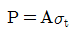
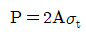
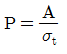
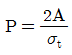
(정답률: 52%)
46. 큰 하중이나 충격 또는 교번하중을 받거나 저온에 사용되는 완전용입 이음 형태는?
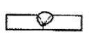
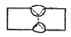
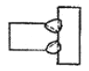
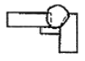
(정답률: 73%)
47. 용접지그(jig)의 사용 목적으로 틀린 것은?
- 소량 생산을 위해 사용된다.
- 용접작업을 쉽게 한다.
- 제품의 정밀도와 용접부의 신뢰성을 높인다.
- 공정수를 절약하므로 능률을 좋게 한다.
(정답률: 94%)
48. 용접변형에 영향을 미치는 인자 중 용접열에 관계되는 인자와 거리가 가장 먼 것은?
- 용접속도
- 용접층수
- 용접전류
- 부재치수
(정답률: 86%)
49. 용접이음의 안전율을 계산하는 식으로 맞는 것은?
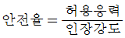
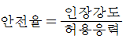
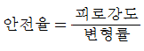
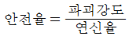
(정답률: 77%)
50. 용접부에 생기는 잔류응력 제거법이 아닌 것은?
- 노 내 풀림법
- 국부 풀림법
- 기계적 응력 완화법
- 역 변형 풀림법
(정답률: 63%)
51. 다음 용접 기호는 무슨 용접법인가?
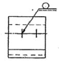
- 스폿 용접
- 심 용접
- 필릿 용접
- 플러그 용접
(정답률: 76%)
52. 용접부의 시험에서 파괴시험이 아닌 것은?
- 형광침투시험
- 육안조직시험
- 충격시험
- 피로시험
(정답률: 78%)
53. 한 부분의 몇 층을 용접하다가 이것을 다음 부분의 층으로 연속시켜 전체가 단계를 이루도록 용착시켜 나가는 것으로 변형 및 잔류응력을 줄이기 위해 용접하는 방법으로 맞는 것은?
- 덧붙이법
- 블록법
- 스킵법
- 캐스케이드법
(정답률: 83%)
54. 결함 중 가장 치명적인 것으로 발생되면 그 양단에 드릴로 정지구멍을 뚫고 깍아내어 규정의 홈으로 다듬질하는 것은?
- 균열(crack)
- 은점(fish eye)
- 언더컷(under cut)
- 기공(blow hole)
(정답률: 77%)
55. 다음 중 계량값 관리도에 해당되는 것은?
- c 관리도
- nP 관리도
- R 관리도
- u 관리도
(정답률: 49%)
56. 다음 검사의 종류 중 검사공정에 의한 분류에 해당되지 않는 것은?
- 수입검사
- 출하검사
- 출장검사
- 공정검사
(정답률: 82%)
57. 로트 크기 1000, 부적합품률이 15%인 로트에서 5개의 랜덤시료 중에서 발견된 부적합품수가 1개일 확률을 이항분포로 계산하면 약 얼마인가?
- 0.1648
- 0.3915
- 0.6085
- 0.8352
(정답률: 50%)
58. Ralnh M. Barnes 교수가 제시한 동작경제의 원칙 중 작업장 배치에 관한 원칙(Arrangement of workplace)에 해당되지 않는 것은?
- 가급적이면 낙하식 운반방법을 이용한다.
- 모든 공구나 재료는 지정된 위치에 있도록 한다.
- 충분한 조명을 하여 작업자가 잘 볼 수 있도록 한다.
- 가급적 용이하고 자연스런 리듬을 타고 일할 수 있도록 작업을 구성하여야 한다.
(정답률: 57%)
59. 품질코스트(quality cost)를 예방코스트, 실패코스트, 평가코스트로 분류할 때, 다음 중 실패코스트(failure cost)에 속하는 것이 아닌 것은?
- 시험 코스트
- 불량대책 코스트
- 재가공 코스트
- 설계변경 코스트
(정답률: 70%)
60. 그림과 같은 계획공정도(Network)에서 주공정은? (단, 화살표 아래의 숫자는 활동시간을 나타낸 것이다.)
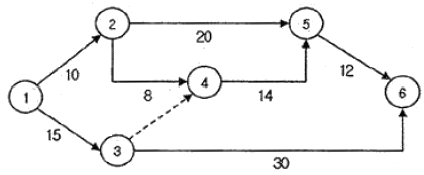
- ①-③-⑥
- ①-②-⑤-⑥
- ①-②-④-⑤-⑥
- ①-③-④-⑤-⑥
(정답률: 74%)